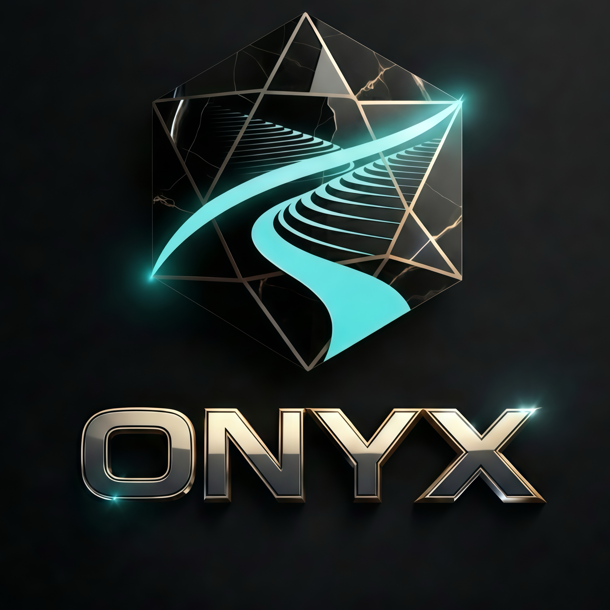

極致科技，
淬煉於深處。
ONYX | DEEP TECH 奧尼克斯科技致力於在極端環境中尋求穩定。如同黑曜石經由地質壓力淬煉而成，我們的數據演算法與韌性節點設計，是為了在最嚴酷的挑戰下提供絕對的精準度。我們不只是科技的創造者，更是智慧數據的提煉者。

Crystal Growth 晶體生長演算法
我們拒絕盲目的暴力運算。ONYX 的核心技術「晶體生長演算法」採用逆熵架構，模擬自然界礦物的結構化過程，在訓練初期便建立邏輯骨架，大幅降低無謂的算力損耗，實現真正的智慧提純。
Deep Tech Performance Radar
Technical Whitepaper
DOC_ID: ONX-2026-REVISION-A // INTERNAL USE ONLY
01. 逆熵運算架構 (Anti-Entropy Computing)
我們認為數據不應只是堆疊。透過 ONYX Protocol，我們將雜訊轉化為有序的幾何邏輯體，讓運算過程本身即是能源優化的過程。
02. 負碳協議 (Negative Carbon Protocol)
利用邊緣運算節點的熱能循環系統，我們將伺服器廢熱轉化為可供當地農業或微電網使用的二次能源，實現運算與生態的共生。
03. 智慧財產聲明 (Intellectual Property)
> PATENT PENDING STATUS
- Crystal Growth Algorithm (V2.1)
- Lidao Edge Node Cooling Architecture
- RTK Precision Correction Network
Sector Zero Node
位於極端環境的實地運算節點，目前正為導航系統與微電網提供即時同步數據。
SYSTEM_LIVE_LOGS
Get in Touch
我們歡迎任何關於數據權威、負碳運算或邊緣 AI 架構的商務合作與技術諮詢。
Official Email
onyxstudio@onyx.twDeep Tech Node
Sector Zero, TW (Deep Tech Infrastructure)

品牌理念 Analysis
"ONYX | DEEP TECH 奧尼克斯科技" 代表著純粹、堅韌與不可被輕易窺探的核心價值。我們追求如黑曜石般的切面——俐落、冷鋒且充滿力量感。在全球科技競爭的浪潮中，我們選擇隱身於深處，為未來世界提供最穩固的底層邏輯。